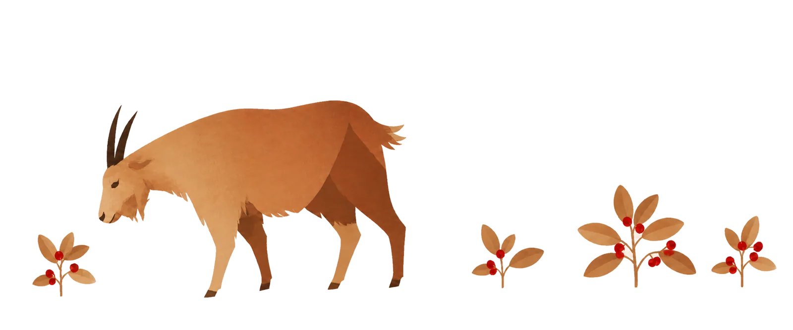

You drink it every day. You have no idea what it is.
Neither did I.
Scroll ↓
You wake up and you want coffee.
Before you get it you have to find a door, order something,
watch it being made, and finally enjoy it. Four steps.
I could not explain any of them properly. So I looked them all up. Then I found out that millions of other people look them up too.
01
Find it
Who found it first — and how do we find it?
A goat found it first

Goats ate the red berries and would not sleep. Their herder tried them himself and took
them to the monks. In the story he is called Kaldi.
The story is set in the ninth century. Nobody wrote it down until
1671. In that first version, the herder has no name.2
His name Kaldi was added later. Ethiopia's biggest coffee chain is called Kaldi's.
There is a Kaldi's Coffee in St. Louis too, and Kaldi Coffee Farm shops across
Japan.9
jaḏwa, “ember”. This is the Turkish name for the pot.
ibrik
Persian
āb “water” and rēxtan “to pour”. English borrowed this
word for the pot. In Turkish it only means a pitcher.
espresso
Italian
“Pressed out”. Accounts differ on the machine: the first known patent
is Angelo Moriondo’s, in Turin in 1884.
French press
English
Accounts differ. Two Frenchmen patented a version in 1852, but it did not seal.
Two Milanese designers added the seal in 1928. In France the pot is a
cafetière.
pour-over
English
The action. In English, drip means the machine that pours
for you.
AeroPress
Brand name
The Aerobie, a flying ring by the same inventor. The company later took the
coffee maker’s name.
In a coffee bean
These are rounded representative values for a green coffee bean.
A bean is mostly carbohydrate. Its oils are a smaller share, but they carry aroma
and change how a coffee feels in the mouth.14
Approximate share by mass. Small sections are enlarged for legibility; the
numbers show the values. Variety, origin and processing change the result.
04
Enjoy it
How do you put a taste into words?
The vocabulary of a sip
Jasmine and wet cardboard sit in this list on equal terms.
A grader never writes “good”. They write blackcurrant, cane sugar, wet cardboard,
tobacco, cooked butter, sour milk.5 The list is fixed and published. Anyone can borrow it. Try it on the cup next to you. Not “nice”. What does it actually taste like?
Drawn by us from the attribute names and grouping in the World Coffee Research
Sensory Lexicon, second edition, 2017 — words and hierarchy only. Its
definitions, reference products and preparation methods are not reproduced, and neither
is the well-known flavour wheel artwork. Angles, colours and type are ours.
Not everyone drinks it every day
Ten of these sixty-seven countries drink a cup a day. Nineteen do not
reach one cup a week.
A cup is 12 g of green coffee, about 10 g roasted.34
The dashed line sits at seven cups, which is one a day.
Norway is highest at 14 a week, and Angola lowest at one cup every 40 weeks.
The sign, the name, the recipe, the machine, the words. None of it was obvious. None of it was hidden either. It was all there in public data. Tomorrow, you will probably drink it again.
This time, you’ll know a little more about what’s in your cup.
A goat found it first. In English, GOAT also means greatest of all
time. For something that gets us through the working day, that sounds about right.